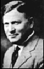

According to some reference books, "Desiderata" is still
sometimes thought to have been 'found' at Old St. Paul's Church in Baltimore
and to date back to 1692. It was actually written in the early 1920's by Max
Ehrmann (1872-1945), a lawyer from Terre Haute, Indiana. Like most of Ehrmann's writings, "Desiderata" failed to attract much attention during his lifetime; three years after his death, his widow had it and some of his other works published as "The Poems of Max Ehrmann" (p.165).
During the Lenten season of 1959 or 1960, Rev. Frederick Kates, the rector of St. Paul's Church in Baltimore, Maryland,
used the poem in a collection of mimeographed devotional material
for his congregation.
Someone reprinting it later, separated from its original credit, erroneously describing it as having been found in old St. Paul's Church dated 1692, misinterpreting the church letterhead.
The year 1692 is in fact the founding date of St. Paul's Church and has nothing to do with the poem.
"Desiderata" was copyrighted by Max Ehrmann on January 3, 1927 (federal copyright NO. 962402). The copyright was bequeathed to his widow, Bertha K. Ehrmann, upon his death in 1945. It was renewed in 1948 and 1954 by
Bertha and bequeathed to her nephew, Richmond Wight, upon her death in 1962. In 1971, Richmond Wight assigned the copyright for value to the Crescendo Publishing Co. headed by Robert Bell. Books containing "Desiderata" are published by Crown Publishers and can be obtained through bookstores. Other permissions must be obtained from the owner of the copyright - Robert L. Bell, 427 South Shore Drive, Sarasota, Florida 34234.
The written use of "Desiderata" without permission is believed to be generally covered under public domain laws because
Max Ehrmann, although having secured a legal copyright and renewed same, never properly or in any way attached a copyright notice to copies of "Desiderata" which he released for public domain. This was tested in 1975 when
the Crescendo company instituted a lawsuit, Bell v. Combined Registry Co. against a company which published "Desiderata" without permission. The court ruled in favor of the defendant because of Ehrmann's failure to properly attach copyright notices to public domain versions of the poem.
Sources: Fred D. Cavinder, "Desiderata", TWA Ambassador, Aug. 1973, pp. 14-15
Indiana Media Journal, Fall/Winter 1997 Vol. 20 No. 1-2
Bell v. Combined Registry Co., 397 F. Supp. 1241 (N.D. Ill. 1975).
Bell v. Combined Registry Co., 536 F.2d 164 (7th Cir. 5/14/1976), cert. denied 429 U.S. 1001, 97 S.Ct. 530, 50 L.Ed.2d. 612 (December 6, 1976)
 Max Ehrmann
The calligraphy poster at the top of the page is by Sherrie Lovler. You might like to visit her site to see this plus her other lovely calligraphic creations. Art Posters of Canada has this poster.
An excellent source of information on the authorship, copyright and history of Desiderata can be found on Volkert Braren's site which includes a photo of St.Paul's Parish, Baltimore, and printed material provided by the Parish.
Desiderata is available for purchase in hardcover at Amazon.com, or Barnesandnoble.com, illustrated by Sally Sturman. "This classic book of inspiration has sold more than 190,000 copies and continues to give comfort and cheer to new readers year after year."
In Dec 1971 Les Crane's record of Desiderata set to music was #8 on the charts and earned him a Grammy Award (incidently, he wasn't able to take advantage of the 1975 Bell v. Combined Registry Co. decision mentioned above and was forced to share royalties with the Ehrmann family because of copyright violations). It is now available as an audio CD thru Amazon.com. Also at Amazon.com is Arturo Benavides, singing a Spanish version.
Please visit The Art and Poetry site for an even more exhaustive history of the origins of Desiderata. Visit Richie's CyberLibrary for a more complete story of how Desiderata came to be in the public domain. Finally visit another Desiderata site that covers the history of the origins of Desiderata and some trivia like "is it 'be cheerful' or 'be careful'?".
|

{kind=link}